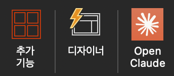

PPT 안에서 Claude를 쓰는 게 왜 다를까?
Claude.ai 창 따로, PPT 창 따로, 이제 그 번거로움이 없어집니다
지금까지 Claude를 쓰는 방식: Claude.ai 탭으로 가서 요청 → 텍스트 복사 → PPT 창으로 이동 → 붙여넣기. 슬라이드 10장이면 이 반복을 최소 30번 합니다. 플러그인은 이 동선을 완전히 제거합니다. PPT를 닫지 않고, 오른쪽 패널에서 바로 대화하고, 원하는 텍스트를 슬라이드에 직접 삽입합니다.
① Claude.ai 탭 이동
② 프롬프트 입력 & 대기
③ 결과 복사
④ PPT로 복귀
⑤ 붙여넣기 & 서식 수정
⑥ (반복 × 슬라이드 수)
① PPT 열기
② 오른쪽 Claude 패널 클릭
③ 대화하면서 바로 적용
④ 슬라이드에 직접 삽입
끝. 탭 전환 0회.
컨텍스트 유지
Claude 패널이 현재 슬라이드의 내용을 읽고, 문맥에 맞는 텍스트를 제안합니다. 처음부터 설명할 필요 없습니다.
직접 삽입
생성된 텍스트를 클릭 한 번으로 현재 슬라이드 텍스트 박스에 바로 삽입합니다.
연속 수정
"더 짧게", "강조 문구 추가", "공식 톤으로" 패널 안에서 즉시 반영됩니다.
전체 덱 분석
업로드된 PPT 파일 전체를 읽고 일관성, 논리 흐름, 개선점을 한 번에 피드백합니다.
Claude 패널 첫 화면: 이렇게 생겼습니다
리본 오른쪽 끝 "클로드 열기" 버튼을 누르면 오른쪽 패널이 열립니다
- 리본 오른쪽 끝 "클로드 열기" 클릭
PowerPoint 리본 메뉴 맨 오른쪽에 클로드 열기 버튼이 있습니다. 클릭하면 화면 오른쪽에 Claude 패널이 열립니다.
- 패널 첫 화면 확인
패널이 열리면 상단에 Claude (베타) 표시가 보이고, 아래에 빠르게 시작할 수 있는 제안 카드 4개가 나타납니다:파워포인트에서 작업하기이 덱 요약하기차트 추가하기슬라이드 레이아웃 바꾸기슬라이드 상세 내용 추가하기 - 슬라이드 선택 상태 확인
패널 하단에 "슬라이드 1 선택됨"처럼 현재 선택된 슬라이드 번호가 표시됩니다. Claude가 어떤 슬라이드를 보고 있는지 알 수 있습니다. 슬라이드를 클릭해 바꾸면 패널도 따라 바뀝니다. - 대화 시작: 입력창 사용
패널 하단의 입력창에 요청을 직접 타이핑하고 전송 버튼(→)을 누릅니다. 또는 위의 제안 카드를 클릭하면 해당 작업이 바로 실행됩니다.
리본에 클로드 열기 버튼이 없다면: 삽입 → 추가 기능 → 내 추가 기능에서 Claude Add-in을 찾아 활성화하세요. 설치 후 PPT를 재시작해야 보이는 경우도 있습니다.
플러그인으로 할 수 있는 것 5가지
PPT 패널에서 바로 실행되는 핵심 기능들
1. 슬라이드 텍스트 생성·수정
제목, 본문, 불릿 포인트를 패널에서 생성하고 클릭 한 번으로 슬라이드에 삽입합니다. "더 짧게", "강조해줘" 즉시 반영.
2. 전체 덱 구조 설계
주제만 말하면 목차와 각 슬라이드 흐름을 제안합니다. 슬라이드를 일괄 추가하는 것도 가능합니다.
3. 발표자 노트 자동 작성
슬라이드 내용을 읽고 발표 때 실제로 말할 스크립트를 노트 영역에 바로 입력합니다.
4. 전체 덱 피드백
완성된 발표 자료를 업로드하면 논리 흐름, 메시지 일관성, 텍스트 과다 슬라이드를 한 번에 진단합니다.
5. 다국어 즉시 번역
슬라이드를 선택하고 "영어로 번역해줘"라고 요청하면, 각 텍스트 박스의 내용이 자연스러운 영어로 교체됩니다. 글로벌 발표 준비 시간을 대폭 단축합니다.
플러그인은 텍스트 콘텐츠 생성과 편집에 특화되어 있습니다. 이미지 자동 삽입, 애니메이션 설정, 차트 데이터 직접 입력은 아직 지원되지 않습니다. 디자인 레이아웃 변경은 직접 PPT에서 수행하세요.
실전 활용 시나리오 6가지
패널을 열고 바로 따라 할 수 있는 상황별 프롬프트
📌 시나리오 1: 빈 슬라이드에 전체 구조 잡기
새 PPT를 열고, Claude 패널에 발표 정보를 입력합니다. 목차부터 각 슬라이드 내용까지 한 번에 받습니다.
📌 시나리오 2: 선택한 슬라이드 텍스트 즉시 개선
내용이 있는 슬라이드를 클릭해 선택한 뒤, 패널에서 개선을 요청합니다.
📌 시나리오 3: 발표자 노트 전체 작성
슬라이드가 완성되면, 패널에서 모든 슬라이드의 발표 스크립트를 한 번에 요청합니다.
📌 시나리오 4: 경영진 보고용 요약 슬라이드
상세 자료를 완성한 뒤, 경영진용 핵심 요약 슬라이드를 추가합니다.
📌 시나리오 5: 기존 자료 완성도 진단
완성된 발표 자료를 패널에 올리고 약점을 찾아달라고 요청합니다.
📌 시나리오 6: 글로벌 발표용 영어 번역
한국어로 완성된 자료를 영어 버전으로 빠르게 전환합니다.
파워포인트 × 클로드 플러그인: 셀프 실습 과제 7선
과제 1부터 순서대로, 마지막엔 대화만으로 발표자료를 완성하는 사람이 됩니다
- Claude 유료 플랜 (Pro / Max / Team / Enterprise)
- Microsoft PowerPoint (데스크톱 또는 웹)
- Claude in PowerPoint 애드인 설치 완료
각 과제를 클릭하면 상세 안내가 펼쳐집니다.
관심 있는 뉴스 기사나 블로그 글의 URL을 클로드에게 주고, 핵심 내용을 슬라이드 3장으로 요약하게 하세요.
방법
- 파워포인트를 열고 새 프레젠테이션을 시작합니다.
- 클로드 플러그인 사이드바를 엽니다.
- 아래 프롬프트를 입력합니다:
유튜브 URL은 영상 내용을 읽지 못합니다. 텍스트 기반 웹페이지 URL을 사용하세요.
체크포인트
- 클로드가 기사 내용을 읽고 슬라이드를 생성했는가?
- 3장의 구조가 요청한 대로 나왔는가?
- 내가 타이핑한 건 프롬프트뿐인가?
💡 팁: 자기 업종과 관련된 기사를 고르면 결과물이 실제로 쓸모 있습니다. "내일 팀 미팅에서 공유하고 싶은 기사"를 골라보세요.
디자인이 마음에 들지 않는 슬라이드 1장을 클로드에게 리디자인시키세요.
방법
- 아래 내용을 슬라이드 1장에 그대로 복사해서 붙여넣으세요. (정보는 많지만 정리가 안 된 샘플입니다)
- 그 슬라이드를 선택한 상태에서 클로드에게 입력합니다:
체크포인트
- 제목이 명사형에서 문장형(액션 타이틀)으로 바뀌었는가?
- 7줄의 텍스트가 3개 이내 핵심 포인트로 압축되었는가?
- 레이아웃이 개선되었는가?
💡 더 해보기: 결과가 마음에 안 들면 "맥킨지 1-슬라이드-1-메시지 원칙으로, 제목 24pt, 본문 16pt로 다시 만들어줘"처럼 조건을 더 구체적으로 바꿔 재시도해보세요.
회사 템플릿을 먼저 열고, 클로드에게 그 스타일에 맞춰 새 슬라이드 5장을 만들게 하세요.
방법
- 회사 템플릿이 적용된 파워포인트 파일을 엽니다. (없다면 기본 테마 중 하나를 적용하세요.)
- 클로드에게 입력합니다:
체크포인트
- 기존 템플릿의 색상/폰트가 새 슬라이드에도 적용되었는가?
- 5장의 구조가 요청한 순서대로 생성되었는가?
- 차트 영역이 확보되어 직접 데이터를 넣을 수 있는 상태인가?
💡 일부러 실패해보기: 템플릿을 적용하지 않은 빈 파일에서 같은 프롬프트를 입력해보세요. 선 조건 세팅이 왜 중요한지 바로 체감됩니다.
텍스트로 나열된 프로세스를 편집 가능한 다이어그램으로 변환하세요.
방법
- 슬라이드 하나에 다음 텍스트를 작성합니다:
- 그 슬라이드를 선택하고 클로드에게 입력합니다:
- 생성된 다이어그램의 도형을 클릭해서 직접 텍스트나 색상을 수정해봅니다.
체크포인트
- 텍스트가 시각적 다이어그램으로 변환되었는가?
- 각 도형을 클릭해서 직접 편집할 수 있는가? (이미지가 아니라 네이티브 도형)
- 도형의 색상이나 텍스트를 직접 바꿔보았는가?
💡 팁: 자기 회사의 실제 프로세스를 넣어보세요. "채용 프로세스 4단계", "고객 온보딩 6단계" 등. 결과물을 바로 업무에 쓸 수 있습니다.
20장 내외의 발표자료를 클로드와의 대화를 통해 10장으로 압축하세요. 한 번의 지시가 아니라 여러 턴의 대화로 점진적으로 다듬습니다.
20장 내외의 발표자료를 엽니다. (없다면 과제 1~4 결과물을 합쳐서 사용하세요.)
체크포인트
- 클로드가 전체 덱의 구조를 분석해서 보여주었는가?
- 합치기/삭제 추천이 합리적이었는가?
- 최종 10장의 스토리라인이 자연스러운가?
- 4턴 이상의 대화를 통해 점진적으로 결과를 만들었는가?
⚠️ 주의: 파일 용량이 30MB를 넘으면 플러그인이 처리하지 못합니다. 각 턴이 끝날 때마다 파일을 다른 이름으로 저장해두면 안전합니다.
완성된 덱에 발표 스크립트(스피커 노트)를 추가하고, 전체 덱의 영어 버전을 만드세요.
과제 5에서 압축한 덱(또는 본인의 발표자료)을 엽니다.
스피커 노트가 추가된 걸 확인한 뒤, 발표자 보기에서 노트를 확인합니다.
체크포인트
- 모든 슬라이드에 스피커 노트가 추가되었는가?
- 노트의 톤이 이사회 발표에 적합한가?
- 영어 버전의 레이아웃이 원본과 동일하게 유지되었는가?
- 하나의 원본에서 2가지 산출물(노트 + 영어 버전)을 만들었는가?
💡 팁: "이사회 임원" 대신 "신입사원 온보딩"으로 청중을 바꾸면 같은 슬라이드인데 노트의 톤과 깊이가 완전히 달라집니다.
빈 파워포인트를 열고, 처음부터 끝까지 대화만으로 전략 발표 덱을 완성하세요. 과제 1~6에서 배운 모든 기술을 하나로 통합합니다.
회사 템플릿이 있다면 먼저 적용한 뒤 시작하세요.
체크포인트
- 백지 상태에서 시작했는가?
- 15장 내외의 완성된 덱이 만들어졌는가?
- 문제→기회→솔루션→로드맵→Ask 구조가 갖춰졌는가?
- 차트/다이어그램 등 시각 요소가 포함되었는가?
- 액션 타이틀이 적용되었는가?
- 스피커 노트가 추가되었는가?
- 전체 과정에서 슬라이드를 직접 편집한 적이 거의 없는가?
같은 도구를 써도 결과가 다른 이유는 지시하는 사람의 전문성이 다르기 때문입니다. AI 시대에도 전문성은 가치가 있습니다. 오히려 더 큰 가치를 갖습니다.
⚠️ 주의: 각 턴이 끝날 때마다 파일을 다른 이름으로 저장하세요. (v1_구조, v2_시각화, v3_스토리라인...) 과제 1의 결과물과 과제 7의 결과물을 나란히 놓으면, 2시간 동안 무엇이 달라졌는지 눈에 보입니다.
전체 과제 구조
| 과제 | 난이도 | 핵심 체험 | 소요 시간 |
|---|---|---|---|
| 1. 웹 기사 → 슬라이드 3장 | ★☆☆☆☆ | 첫 성공 경험 + 웹 브라우징 | 10분 |
| 2. 슬라이드 리디자인 | ★★☆☆☆ | 선택 → 구체적 지시 패턴 | 10분 |
| 3. 템플릿 기반 섹션 생성 | ★★★☆☆ | 템플릿 인식 + 선 조건 세팅 | 15분 |
| 4. 텍스트 → 다이어그램 | ★★★☆☆ | 네이티브 도형 + 80:20 법칙 | 15분 |
| 5. 20장 → 10장 압축 | ★★★★☆ | 멀티턴 대화 설계 | 20분 |
| 6. 스피커 노트 + 영어 버전 | ★★★★☆ | 1→N 확장 | 20분 |
| 7. 백지 → 전략 덱 완성 | ★★★★★ | 풀 오케스트레이션 | 30분 |
총 소요 시간: 약 2시간
고급 팁 & 자주 묻는 질문
더 잘 쓰기 위한 실무 노하우와 FAQ
고급 팁 3가지
패널 첫 메시지에 "너는 McKinsey 출신 전략 컨설턴트야. 경영진 보고서를 전문으로 써"라고 역할을 주면, 이후 모든 응답의 어조와 구조가 달라집니다. 발표 유형마다 맞는 페르소나를 실험해보세요.
모든 요청에 "2가지 버전으로 제안해줘"를 붙이세요. 항상 두 번째 버전이 더 마음에 드는 경우가 많습니다. A/B 비교가 선택을 쉽게 만듭니다.
"2023년 매출 현황" 대신 "매출 23% 성장, 핵심 동인 3가지"처럼 결론을 담은 Action Title을 요청하세요. 청중이 슬라이드를 훑어만 봐도 핵심을 파악합니다. Claude에게 "모든 슬라이드 제목을 Action Title로 바꿔줘"라고 요청하면 됩니다.
FAQ
물론입니다. 복잡한 아이디어 구체화나 긴 문서 참고는 claude.ai에서, 실제 슬라이드 적용은 플러그인에서 하는 방식이 가장 효율적입니다. 같은 계정으로 대화 내용이 연결되지는 않으므로 필요한 컨텍스트는 패널에 다시 붙여넣으세요.
아니요. 플러그인은 텍스트를 생성·제안하고, 삽입 버튼을 클릭하면 현재 선택된 텍스트 박스에 입력됩니다. 파일 저장은 PPT의 기본 저장 기능을 사용합니다. Claude가 직접 파일을 덮어쓰거나 저장하지는 않습니다.
현재 플러그인은 텍스트 콘텐츠에 특화되어 있습니다. 이미지 자동 삽입이나 차트 데이터 입력은 지원되지 않습니다. 차트 종류와 데이터 구조는 Claude에게 제안받고, 실제 삽입은 PPT 차트 기능을 직접 활용하세요.
PowerPoint Add-in은 Microsoft Office 전용입니다. Google Slides에서는 Chrome 플러그인을 활용해서 비슷한 방식으로 사용할 수 있습니다. Google Slides 화면에서 Claude 크롬 패널을 열고 동일한 프롬프트를 활용하세요.
Claude for Work(팀·엔터프라이즈 플랜) 사용 시, 입력 내용은 모델 학습에 사용되지 않습니다. 기밀 자료를 다룰 때는 반드시 플랜 약관을 확인하고, 필요 시 회사 IT 정책을 우선 따르세요.
Claude가 생성한 수치, 통계, 연도, 사례는 반드시 원본 소스에서 직접 확인하세요. AI가 그럴듯하게 생성한 숫자를 검증 없이 발표에 사용하면 신뢰도에 큰 문제가 생길 수 있습니다.